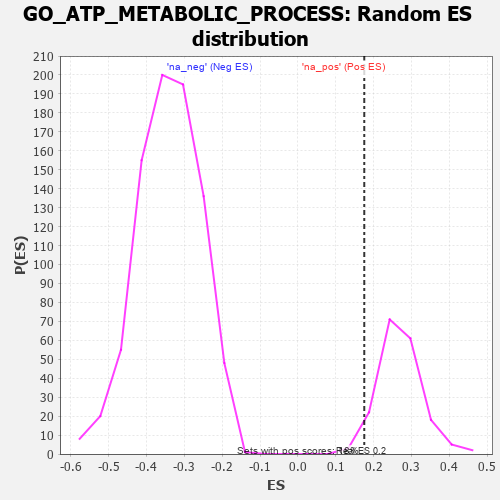

| | | Dataset | 7d |
| Phenotype | NoPhenotypeAvailable |
| Upregulated in class | na_pos |
| GeneSet | GO_ATP_METABOLIC_PROCESS |
| Enrichment Score (ES) | 0.17548068 |
| Normalized Enrichment Score (NES) | 0.6477915 |
| Nominal p-value | 0.97252744 |
| FDR q-value | 0.97122425 |
| FWER p-Value | 1.0 |
Table: GSEA Results Summary
 Fig 1: Enrichment plot: GO_ATP_METABOLIC_PROCESS
Fig 1: Enrichment plot: GO_ATP_METABOLIC_PROCESS
Profile of the Running ES Score & Positions of GeneSet Members on the Rank Ordered List
| PROBE | GENE SYMBOL | GENE_TITLE | RANK IN GENE LIST | RANK METRIC SCORE | RUNNING ES | CORE ENRICHMENT | | 1 | NUP85 | | | 329 | 0.772 | -0.0011 | Yes |
| 2 | ARNT | | | 357 | 0.741 | 0.0343 | Yes |
| 3 | NUP54 | | | 505 | 0.627 | 0.0486 | Yes |
| 4 | CCNB1 | | | 581 | 0.601 | 0.0706 | Yes |
| 5 | RAE1 | | | 827 | 0.524 | 0.0672 | Yes |
| 6 | PARG | | | 884 | 0.509 | 0.0868 | Yes |
| 7 | COX10 | | | 990 | 0.485 | 0.0989 | Yes |
| 8 | FOXK2 | | | 1081 | 0.467 | 0.1120 | Yes |
| 9 | COA6 | | | 1126 | 0.459 | 0.1305 | Yes |
| 10 | NUP93 | | | 1127 | 0.459 | 0.1545 | Yes |
| 11 | NUP43 | | | 1160 | 0.453 | 0.1742 | Yes |
| 12 | NUP88 | | | 1429 | 0.404 | 0.1615 | Yes |
| 13 | NUP58 | | | 1787 | 0.340 | 0.1342 | Yes |
| 14 | MSH2 | | | 1819 | 0.334 | 0.1478 | Yes |
| 15 | FOXK1 | | | 1859 | 0.326 | 0.1599 | Yes |
| 16 | NUP62 | | | 1871 | 0.324 | 0.1755 | Yes |
| 17 | COX15 | | | 2238 | 0.270 | 0.1434 | No |
| 18 | SEC13 | | | 2330 | 0.256 | 0.1454 | No |
| 19 | COX7C | | | 2356 | 0.252 | 0.1554 | No |
| 20 | PDE12 | | | 2608 | 0.211 | 0.1348 | No |
| 21 | NUP50 | | | 2625 | 0.209 | 0.1437 | No |
| 22 | TAZ | | | 2933 | 0.161 | 0.1134 | No |
| 23 | ISCU | | | 2989 | 0.151 | 0.1143 | No |
| 24 | TIGAR | | | 3091 | 0.138 | 0.1088 | No |
| 25 | NUP98 | | | 3261 | 0.112 | 0.0934 | No |
| 26 | LDHA | | | 3479 | 0.080 | 0.0702 | No |
| 27 | SURF1 | | | 3558 | 0.066 | 0.0638 | No |
| 28 | ABCD1 | | | 3677 | 0.047 | 0.0513 | No |
| 29 | COX5A | | | 3738 | 0.036 | 0.0456 | No |
| 30 | NCOR1 | | | 3961 | 0.000 | 0.0176 | No |
| 31 | PARP1 | | | 4014 | -0.010 | 0.0116 | No |
| 32 | SDHA | | | 4334 | -0.066 | -0.0252 | No |
| 33 | ADPGK | | | 4567 | -0.109 | -0.0488 | No |
| 34 | EP300 | | | 4941 | -0.186 | -0.0861 | No |
| 35 | COX5B | | | 4980 | -0.194 | -0.0808 | No |
| 36 | FLCN | | | 5140 | -0.235 | -0.0885 | No |
| 37 | CDK1 | | | 5264 | -0.262 | -0.0904 | No |
| 38 | OGDHL | | | 5322 | -0.277 | -0.0830 | No |
| 39 | ACTN3 | | | 5486 | -0.315 | -0.0871 | No |
| 40 | PGM1 | | | 5593 | -0.342 | -0.0826 | No |
| 41 | CLPX | | | 5717 | -0.381 | -0.0781 | No |
| 42 | GALK1 | | | 5953 | -0.455 | -0.0840 | No |
| 43 | INSR | | | 6204 | -0.538 | -0.0873 | No |
| 44 | TPR | | | 6597 | -0.709 | -0.0997 | No |
| 45 | OLA1 | | | 6706 | -0.765 | -0.0733 | No |
| 46 | DNM1L | | | 6963 | -0.913 | -0.0578 | No |
| 47 | CTNS | | | 7044 | -0.965 | -0.0173 | No |
| 48 | TSPO | | | 7194 | -1.065 | 0.0196 | No |
| 49 | ENO4 | | | 7564 | -1.495 | 0.0514 | No |
Table: GSEA details [plain text format]

Fig 2: GO_ATP_METABOLIC_PROCESS: Random ES distribution
Gene set null distribution of ES for GO_ATP_METABOLIC_PROCESS